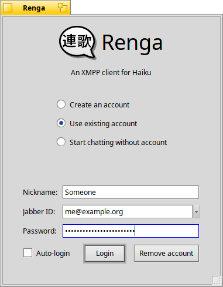
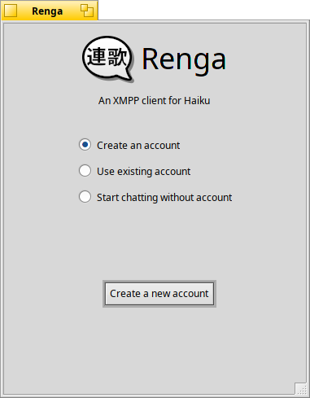
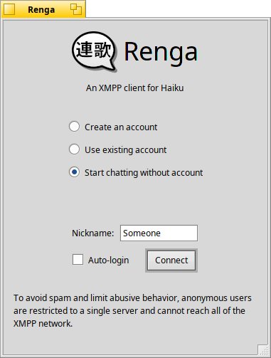
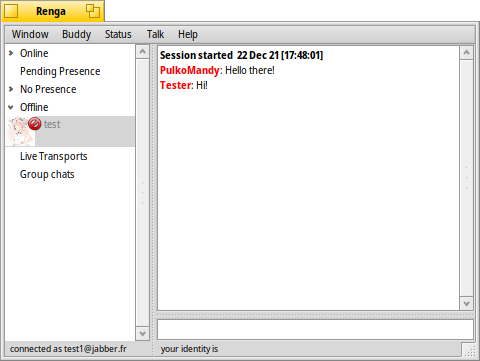
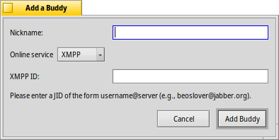
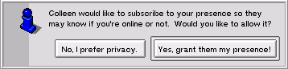
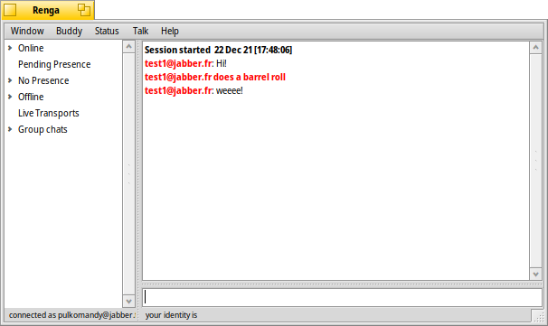

XMPP is an open chat protocol that allows users to communicate with each other much like AOL Instant Messenger and ICQ.
Renga is the client that allows XMPP to be used on Haiku. This user guide describes how to use the client as well as the XMPP chat system. Here's what we'll be covering:
Renga is a Haiku-native client. It is based on Jabber4BeOS originally developed by Rapture In Venice. Renga delivers the friendly user experience that some XMPP clients do not, much in the style of JabberIM. Renga intends to be simple to use, with recycled GUI metaphors that make using this client as natural as any other you're used to.
As such, let's look at Renga!
When you first run Renga, you will be presented with a window like this:



If you've used XMPP in the past then this should look familiar to you. Just enter the login information you've always used. If you haven't seen the nickname field before, this is used as a friendly name only for yourself in chat windows. Nobody else will see this information so it's not critical. As an expert, you'll probably want to check the Auto-login box as well.
If you're new to XMPP, you can create an account. This is an important step in getting online. You'll want to decide on your official username! Here is what all the fields mean:
To create your account, use the "Create an account" button and follow the instructions. You will need to pick a server to host your account, or you can let Renga select one for you.
If you don't want to create an account yet, you can also start chatting without one. This allows you to get started by just picking a nickname, but you won't be able to add contacts, and some chat rooms may not let you in (as a spam protection measure). Nonetheless, it allows you to make your first steps in the XMPP network.
There are also some rules you should know about how Auto-login works in specific situations. Here they are:
Congratulations, you're logged in! Your login window has now transformed and looks like:

On the left is your buddy list, or "roster" as the XMPP group likes to call it. This is where you'll see your friends and family, their online status and more. If you just created your account, it will appear empty. So let's fill it up!
There are two basic concepts when dealing with this list: roster and presence. While many external chat systems treat these concepts as one entity, XMPP keeps them separate. What you need to rememeber is that even if you add a friend to your list (roster), you don't automatically begin seeing their online status (presence). You need to ask for it. Let's illustrate this with an example.
Let's say you wish to add Rapture In Venice to your buddy list. Don't worry, it's OK, I like to chat. :-) The first thing you want to do is go to your Edit menu and select "Add New Buddy." You will see a screen like this:

The two important fields at this time are Nickname and Jabber ID. The username is the Jabber ID of the user you want to add. Mine is rapture@jabber.org, so type that one in. Next, you want to add a nickname, a casual name that tends to be less cryptic then the username. This is up to you, so you can feel free to type in whatever information you'd like that will help you remember who this new buddy really is. The usual value for me would be "Rapture In Venice". Remember, it's totally up to you.
Hit "Add My Buddy".
If everything worked well, you should now see your new entry under the Unknown list. It should be blue. If you see it there, congratulations! I am now your buddy. :-) I am now on your roster. But what good is a buddy when you don't know when they're online? This is the concept of presence.
So you want to know when I'm online, right? OK. Right-click on my name in the list and in the Presence sub-menu select "Subscribe." You've just sent a request to me asking for my presence. What I will see in a moment is your request and I can either accept or decline. Remember this screen because you might be seeing it again very shortly:

If you don't get acceptance right away, don't worry. It could be that the user (possibly me, as in this case) is not online. If at some point the presence is accepted, you will be alerted so no need to stress! If you've gotten acceptance, you've probably already noticed that the user is now either in the online or offline list and their color is green (dark or light) or red. Bet you can't guess what this means? ;-) Right! The greens are for online, red is for offline. The darker shade of green means the user is online, but is either away from their computer or does not want to be distrubed. The lighter shade of green signifies their open for chat. Usually, after being granted presence, the user is online because, well, how else could they have accepted your presence?
Great! So the user is online. Now what? You want to chat is what! Isn't that why you downloaded this program? :-)
The chatting happens on the right part of the main window. At the bottom is a text input where you can send your messages. Above that is a list of previous messages for the current conversation. To chat with different people, simple select them on the left panel.
If you want to send a long message with multiple lines, remember to use Command-Enter to insert a newline (since pressing Enter will send the current message to the other user). If you are not happy with that, you can exchange the two in the preferences window.
Renga supports what's known as "/me syntax". This is when you want to type a message but want to make it as part of an action. It's almost always used for humorous purposes. Here's an example:

To deliver this kind of message, use this syntax:
Here's exactly how I generated the previous example:
There are also other special commands: /nick allows to change your own nickname, and /part allows to leave a group chat with a goodbye message for the other people in there.
In addition to one on one chat, Renga also support group chat. This is when more than two people can chat in the same window at the same time. The advantages are clear:
You can join or create any arbitrary room you want which is what you want if you want to organize a specific meeting place among friends. From the main window, select Talk->Start Group Chat.
Where it says Username, type the nickname you'd like to use for the room. Be unique! Then, where it says Room Name, give the desired name. Room names are of the form name-of-the-room@conference.jabber.org. For example, join renga@chat.jabberfr.org to meet other Renga users.
When you are in a group chat, you may want to send a message to just one person in the room. To do this, you can right click their nickname and select the corresponding option. People who have sent you private messages will appear in red in the group chat participant list.
You can also use the same menu to see other chatters status message.
There are several other features that XMPP offers, as well as many nuances that are specific to Renga. The big one being changing your own online status. But I'll leave these all for you to explore! :-) If it's not easy enough to figure out on your own, then Rapture In Venice has failed you as a developer. So be confident!
If you run into problems (or just want to say hi), you can find the Renga developers on our XMPP chat room renga@chat.jabberfr.org.
I hope this user manual is a friendly springboard to the world of XMPP and Renga. Have fun!